Smoothing with covariate, GLM version
Dongyue Xie
May 25, 2018
Last updated: 2018-05-28
workflowr checks: (Click a bullet for more information)-
✔ R Markdown file: up-to-date
Great! Since the R Markdown file has been committed to the Git repository, you know the exact version of the code that produced these results.
-
✔ Environment: empty
Great job! The global environment was empty. Objects defined in the global environment can affect the analysis in your R Markdown file in unknown ways. For reproduciblity it’s best to always run the code in an empty environment.
-
✔ Seed:
set.seed(20180501)The command
set.seed(20180501)was run prior to running the code in the R Markdown file. Setting a seed ensures that any results that rely on randomness, e.g. subsampling or permutations, are reproducible. -
✔ Session information: recorded
Great job! Recording the operating system, R version, and package versions is critical for reproducibility.
-
Great! You are using Git for version control. Tracking code development and connecting the code version to the results is critical for reproducibility. The version displayed above was the version of the Git repository at the time these results were generated.✔ Repository version: d0a7fde
Note that you need to be careful to ensure that all relevant files for the analysis have been committed to Git prior to generating the results (you can usewflow_publishorwflow_git_commit). workflowr only checks the R Markdown file, but you know if there are other scripts or data files that it depends on. Below is the status of the Git repository when the results were generated:
Note that any generated files, e.g. HTML, png, CSS, etc., are not included in this status report because it is ok for generated content to have uncommitted changes.Ignored files: Ignored: .Rhistory Ignored: .Rproj.user/ Ignored: log/ Untracked files: Untracked: analysis/binom.Rmd Untracked: analysis/glm.Rmd Untracked: analysis/overdis.Rmd Untracked: analysis/smashtutorial.Rmd Untracked: analysis/test.Rmd Untracked: data/treas_bill.csv Untracked: docs/figure/smashtutorial.Rmd/ Untracked: docs/figure/test.Rmd/ Unstaged changes: Modified: analysis/ashpmean.Rmd Modified: analysis/nugget.Rmd
Expand here to see past versions:
Introduction
Consider estimating spatially-structured \(\mu_t\) from Poisson sequence: \[Y_t\sim Poisson(\lambda_t).\] We assume that \(\lambda_t\) satisfies \[\log(\lambda_t)=X_t'\beta+\mu_t\], where \(X_t\) are \(p-\)dimensional covaraites and \(\beta\) is unknown coefficients.
For Bionomial sequence: \[Y_t\sim Binomial(n_t,p_t).\] Assume that \[logit(p_t)=X_t'\beta+\mu_t\], where \(\mu_t\) has smooth structure.
Method
Apply ash to \(Y_t\) and let the posterior mean be \(\tilde\lambda_t\). Define \(\tilde Y_t=\log(\tilde\lambda_t)+\frac{Y_t-\tilde\lambda_t}{\tilde\lambda_t}\) and apply smash.gaus allowing covariates method to \(\tilde Y_t\), which gives \(\hat\mu_t\) and \(\hat\beta\). The recovered smooth mean structure is given by \(\exp(\hat\mu_t)\).
Similarly to Binomial data, \(\tilde Y_t=logit(\tilde p_t)+\frac{Y_t/n_t-\tilde p_t}{\tilde p_t(1-\tilde p_t)}\).
Simulations
Data generation
Poisson sequence: Given \(\mu_t, t=1,2,\dots,T\), \(\lambda_t=\exp(\mu_t+X_t'\beta+N(0,\sigma^2))\), generate \(Y_t\sim Poisson(\lambda_t)\).
Bionimial sequence(\(p\)): Given \(\mu_t, t=1,2,\dots,T\),\(p_t=logit(\mu_t+X_t'\beta+N(0,\sigma^2))\), generate \(Y_t\sim Binomial(n_t,p_t)\), where \(n_t\) is given.
For each case, we run 3 times of simulation and plot the fitted curve.
Poisson Seq
The length of sequence \(T\) is set to be 256, covariates \(X_t\) are generate from \(N(0,I_{p\times p})\), and \(\beta\) is chosen to be \((1,2,-3,-4,5)\) then normalized to have unit norm.
simu_study_poix=function(mu,beta,sigma=1,snr=2,nsimu=3,filter.number=1,family='DaubExPhase',seed=1234){
set.seed(1234)
n=length(mu)
p=length(beta)
X=matrix(rnorm(n*p,0,1),nrow=n,byrow = T)
Xbeta=X%*%beta
mu.est=c()
beta.est=c()
y.data=c()
#lambda.null=exp(mu+Xbeta)
#var.st=1/mean(lambda.null)
#var.mu=var(mu)
#sigma=sqrt(max(var.mu/(snr^2)-var.st,0))
for(s in 1:nsimu){
lambda=exp(mu+Xbeta+rnorm(n,0,sigma))
yt=rpois(n,lambda)
fit=smash_gen_x_lite(yt,X,wave_family = family,filter.number = filter.number,dist_family = 'poisson')
mu.est=rbind(mu.est,fit$mu.est)
beta.est=rbind(beta.est,fit$beta.est)
y.data=rbind(y.data,yt)
}
return(list(mu.est=mu.est,beta.est=beta.est,y=y.data,X=X,sigma=sigma))
}
beta=c(1,2,-3,-4,5)
beta=beta/norm(beta,'2')Step
mu=c(rep(2,128), rep(5, 128), rep(6, 128), rep(2, 128))
result=simu_study_poix(mu,beta)
plot(result$mu.est[1,],type='l',col=2,ylab = '',main='Estimated mean function(mu), 3 runs')
lines(result$mu.est[2,],col=3)
lines(result$mu.est[3,],col=4)
lines(exp(mu),lty=2)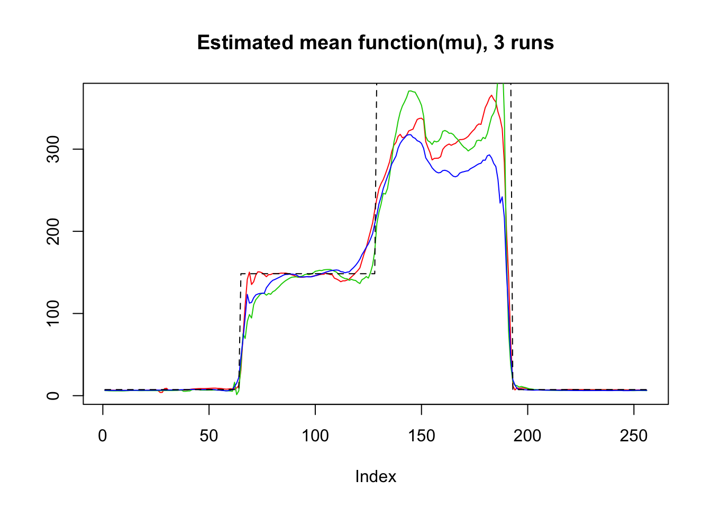
plot(log(result$mu.est[1,]),type='l',col=2,ylab = '',main='Estimated mean function(log mu), 3 runs')
lines(log(result$mu.est[2,]),col=3)
lines(log(result$mu.est[3,]),col=4)
lines(mu,lty=2)plot(beta,result$beta.est[1,],col=2,pch=1,xlab = 'True beta',ylab = 'Estimated beta')
lines(beta,result$beta.est[2,],col=3,pch=2,type='p')
lines(beta,result$beta.est[3,],col=4,pch=3,type='p')
abline(0,1,lty=2)Bumps
m=seq(0,1,length.out = 256)
h = c(4, 5, 3, 4, 5, 4.2, 2.1, 4.3, 3.1, 5.1, 4.2)
w = c(0.005, 0.005, 0.006, 0.01, 0.01, 0.03, 0.01, 0.01, 0.005,0.008,0.005)
t=c(.1,.13,.15,.23,.25,.4,.44,.65,.76,.78,.81)
f = c()
for(i in 1:length(m)){
f[i]=sum(h*(1+((m[i]-t)/w)^4)^(-1))
}
mu=f*1.2
result=simu_study_poix(mu,beta)
plot(exp(mu),lty=2,ylab = '',main='Estimated mean function(mu), 3 runs',type = 'l')
lines(result$mu.est[1,],type='l',col=2)
lines(result$mu.est[2,],col=3)
lines(result$mu.est[3,],col=4)plot(mu,lty=2,ylab = '',main='Estimated mean function(log mu), 3 runs',type = 'l')
lines(log(result$mu.est[1,]),type='l',col=2)
lines(log(result$mu.est[2,]),col=3)
lines(log(result$mu.est[3,]),col=4)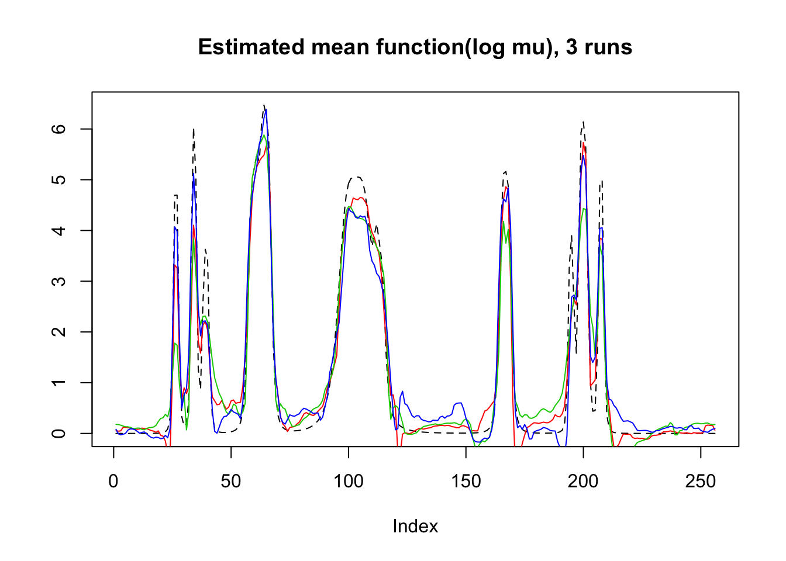
plot(beta,result$beta.est[3,],col=4,pch=3,xlab = 'True beta',ylab = 'Estimated beta')
lines(beta,result$beta.est[2,],col=3,pch=2,type='p')
lines(beta,result$beta.est[1,],col=2,pch=1,type='p')
abline(0,1,lty=2)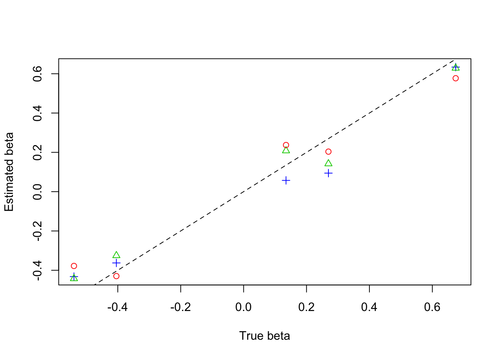
Parabola
r=function(x,c){return((x-c)^2*(x>c)*(x<=1))}
f=function(x){return(0.8 − 30*r(x,0.1) + 60*r(x, 0.2) − 30*r(x, 0.3) +
500*r(x, 0.35) − 1000*r(x, 0.37) + 1000*r(x, 0.41) − 500*r(x, 0.43) +
7.5*r(x, 0.5) − 15*r(x, 0.7) + 7.5*r(x, 0.9))}
mu=f(1:256/256)
mu=mu*7
result=simu_study_poix(mu,beta,filter.number = 8,family = 'DaubLeAsymm')
plot(result$mu.est[1,],type='l',col=2,ylab = '',main='Estimated mean function(mu), 3 runs')
lines(result$mu.est[2,],col=3)
lines(result$mu.est[3,],col=4)
lines(exp(mu),lty=2)plot(log(result$mu.est[1,]),type='l',col=2,ylab = '',main='Estimated mean function(log mu), 3 runs')
lines(log(result$mu.est[2,]),col=3)
lines(log(result$mu.est[3,]),col=4)
lines(mu,lty=2)plot(beta,result$beta.est[1,],col=2,pch=1,xlab = 'True beta',ylab = 'Estimated beta')
lines(beta,result$beta.est[2,],col=3,pch=2,type='p')
lines(beta,result$beta.est[3,],col=4,pch=3,type='p')
abline(0,1,lty=2)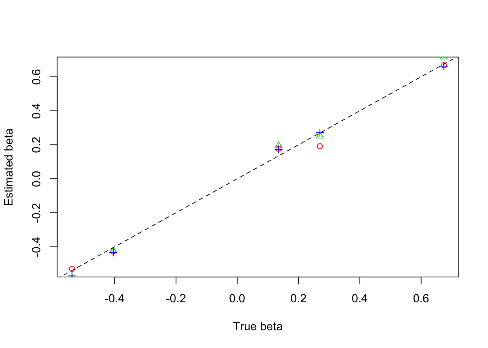
wave
f=function(x){return(0.5 + 2*cos(4*pi*x) + 2*cos(24*pi*x))}
mu=f(1:256/256)
mu=mu-min(mu)
result=simu_study_poix(mu,beta,filter.number = 8,family = 'DaubLeAsymm')
plot(exp(mu),lty=2,ylab = '',main='Estimated mean function(mu), 3 runs',type = 'l')
lines(result$mu.est[1,],type='l',col=2)
lines(result$mu.est[2,],col=3)
lines(result$mu.est[3,],col=4)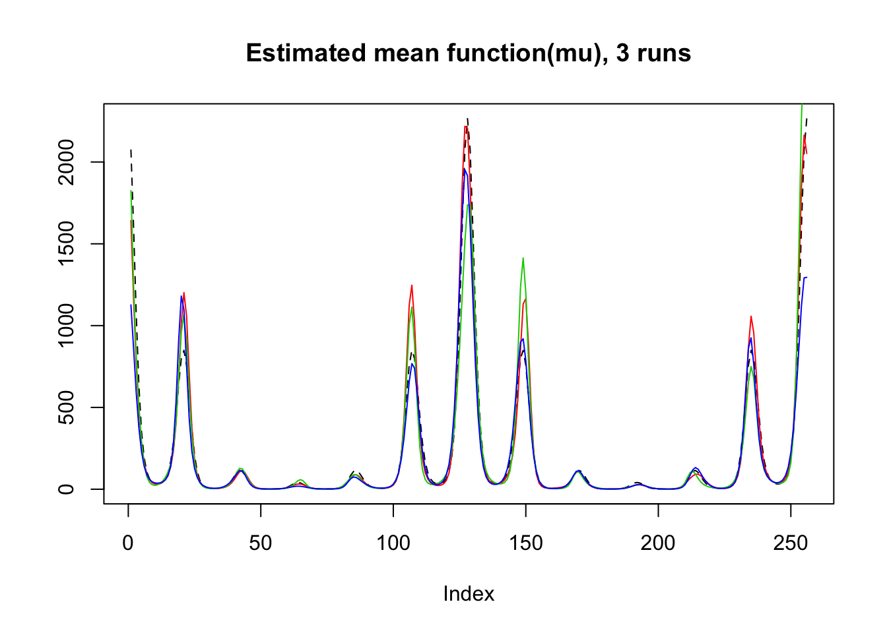
plot(mu,lty=2,ylab = '',main='Estimated mean function(log mu), 3 runs',type = 'l')
lines(log(result$mu.est[1,]),type='l',col=2)
lines(log(result$mu.est[2,]),col=3)
lines(log(result$mu.est[3,]),col=4)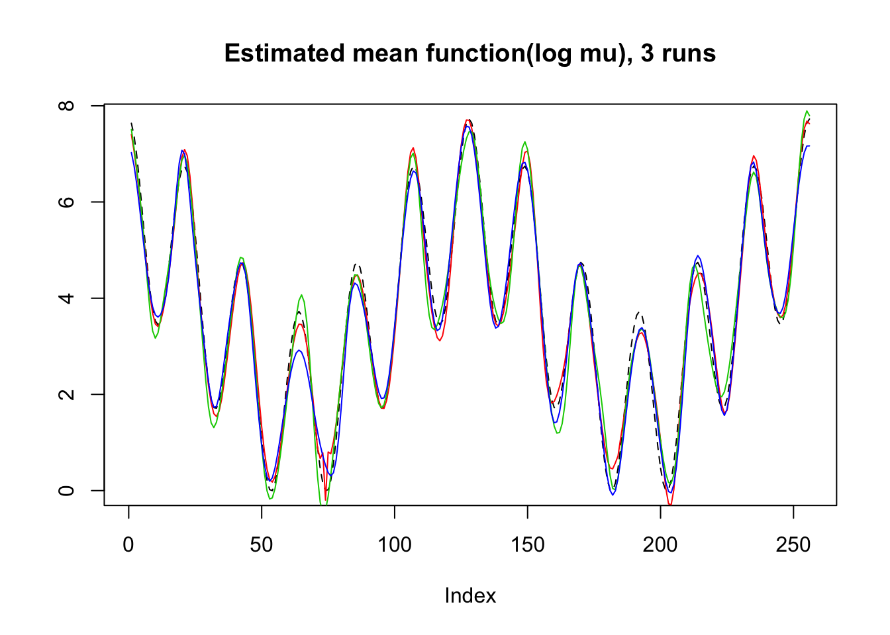
plot(beta,result$beta.est[1,],col=2,pch=1,xlab = 'True beta',ylab = 'Estimated beta')
lines(beta,result$beta.est[2,],col=3,pch=2,type='p')
lines(beta,result$beta.est[3,],col=4,pch=3,type='p')
abline(0,1,lty=2)Binomial Seq
The length of sequence \(T\) is set to be 256, covariates \(X_t\) are generate from \(N(0,I_{p\times p})\), and \(\beta\) is chosen to be \((1,2,-3,-4,5)\) then normalized to have unit norm. \(n_t\) is from Poisson(50).
Step
mu=c(rep(-3,128), rep(0, 128), rep(3, 128), rep(-3, 128))
result=simu_study_binomx(mu,beta,ntri)
plot(result$mu.est[1,],type='l',col=2,ylab = '',main='Estimated mean function(p), 3 runs')
lines(result$mu.est[2,],col=3)
lines(result$mu.est[3,],col=4)
lines(logistic(mu),lty=2)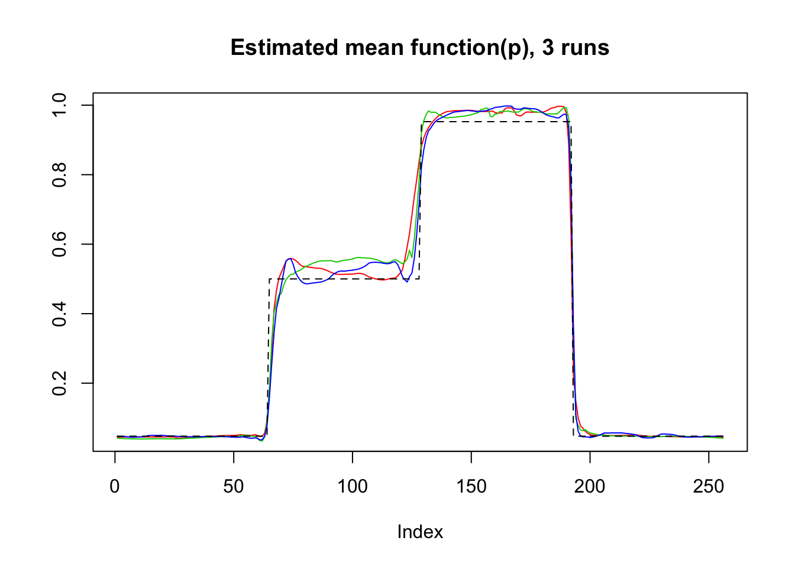
plot(logit(result$mu.est[1,]),type='l',col=2,ylab = '',main='Estimated mean function(logit p), 3 runs')
lines(logit(result$mu.est[2,]),col=3)
lines(logit(result$mu.est[3,]),col=4)
lines(mu,lty=2)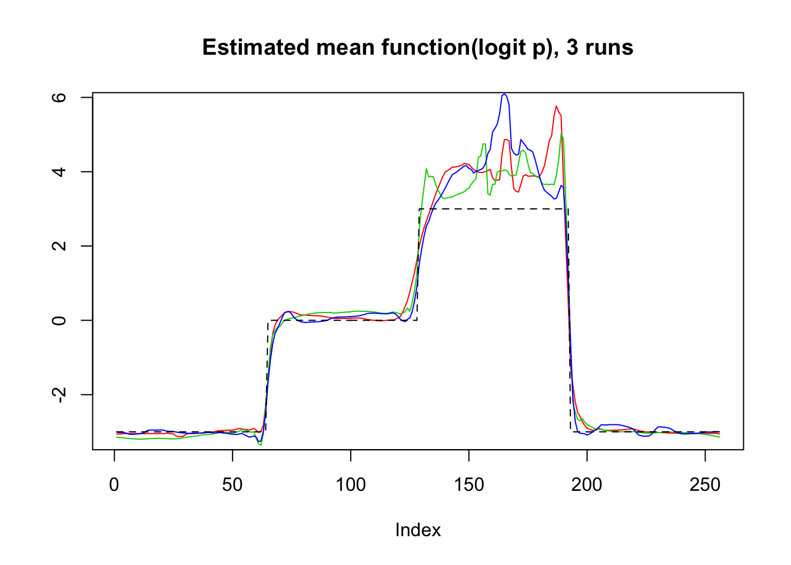
plot(beta,result$beta.est[3,],col=4,pch=3,xlab = 'True beta',ylab = 'Estimated beta')
lines(beta,result$beta.est[2,],col=3,pch=2,type='p')
lines(beta,result$beta.est[1,],col=2,pch=1,type='p')
abline(0,1,lty=2)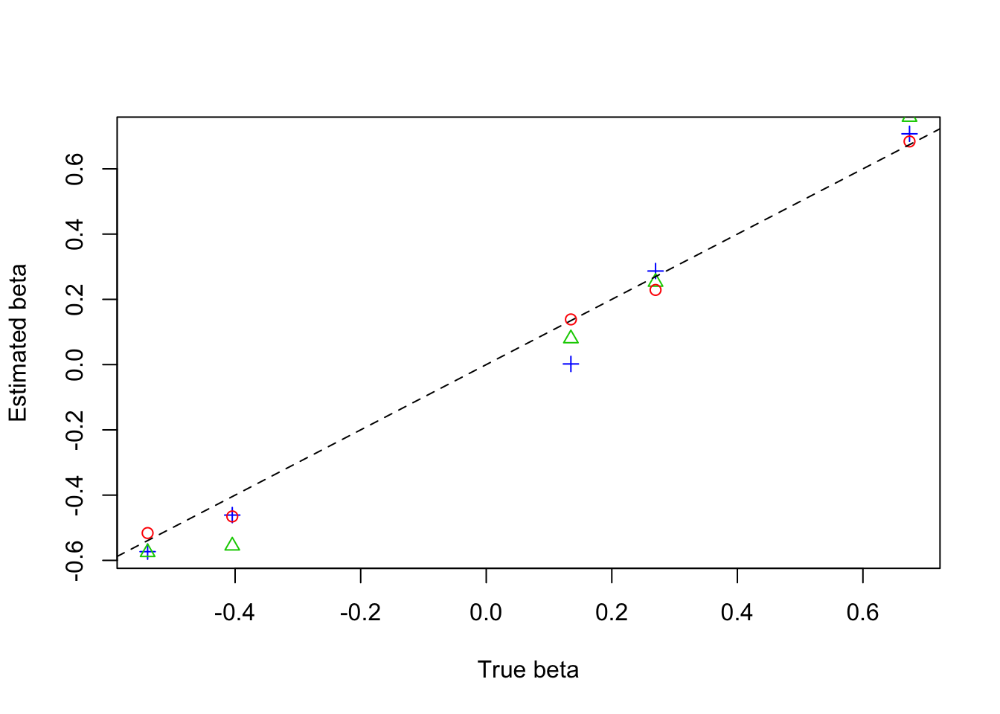
Bumps
m=seq(0,1,length.out = 256)
h = c(4, 5, 3, 4, 5, 4.2, 2.1, 4.3, 3.1, 5.1, 4.2)
w = c(0.005, 0.005, 0.006, 0.01, 0.01, 0.03, 0.01, 0.01, 0.005,0.008,0.005)
t=c(.1,.13,.15,.23,.25,.4,.44,.65,.76,.78,.81)
f = c()
for(i in 1:length(m)){
f[i]=sum(h*(1+((m[i]-t)/w)^4)^(-1))
}
mu=f-3
result=simu_study_binomx(mu,beta,ntri)
plot(logistic(mu),lty=2,type='l',ylab = '',main='Estimated mean function(p), 3 runs')
lines(result$mu.est[2,],col=3)
lines(result$mu.est[3,],col=4)
lines(result$mu.est[1,],col=2)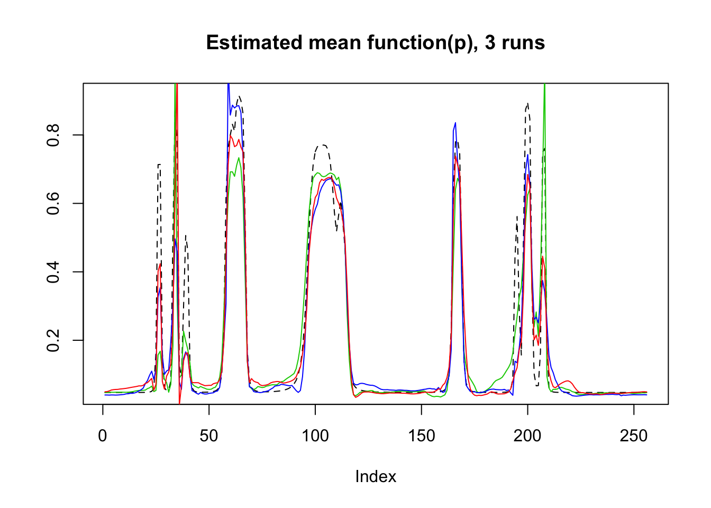
plot(mu,lty=2,type='l',ylab = '',main='Estimated mean function(logit p), 3 runs',ylim=c(-4,3))
lines(logit(result$mu.est[2,]),col=3)
lines(logit(result$mu.est[3,]),col=4)
lines(logit(result$mu.est[1,]),col=2)plot(beta,result$beta.est[2,],col=3,pch=2,xlab = 'True beta',ylab = 'Estimated beta')
lines(beta,result$beta.est[3,],col=4,pch=3,type='p')
lines(beta,result$beta.est[1,],col=2,pch=1,type='p')
abline(0,1,lty=2)Parabola
r=function(x,c){return((x-c)^2*(x>c)*(x<=1))}
f=function(x){return(0.8 − 30*r(x,0.1) + 60*r(x, 0.2) − 30*r(x, 0.3) +
500*r(x, 0.35) − 1000*r(x, 0.37) + 1000*r(x, 0.41) − 500*r(x, 0.43) +
7.5*r(x, 0.5) − 15*r(x, 0.7) + 7.5*r(x, 0.9))}
mu=f(1:256/256)
mu=(mu-min(mu))*10-3
result=simu_study_binomx(mu,beta,ntri,filter.number = 8,family = 'DaubLeAsymm')
plot(result$mu.est[1,],type='l',col=2,ylab = '',main='Estimated mean function(p), 3 runs')
lines(result$mu.est[2,],col=3)
lines(result$mu.est[3,],col=4)
lines(logistic(mu),lty=2)
plot(logit(result$mu.est[1,]),type='l',col=2,ylab = '',main='Estimated mean function(logit p), 3 runs')
lines(logit(result$mu.est[2,]),col=3)
lines(logit(result$mu.est[3,]),col=4)
lines(mu,lty=2)plot(beta,result$beta.est[3,],col=4,pch=3,xlab = 'True beta',ylab = 'Estimated beta',ylim=c(-0.5,0.85))
lines(beta,result$beta.est[2,],col=3,pch=2,type='p')
lines(beta,result$beta.est[1,],col=2,pch=1,type='p')
abline(0,1,lty=2)wave
f=function(x){return(0.5 + 2*cos(4*pi*x) + 2*cos(24*pi*x))}
mu=f(1:256/256)
result=simu_study_binomx(mu,beta,ntri,filter.number = 8,family = 'DaubLeAsymm')
plot(logistic(mu),lty=2,type='l',ylab = '',main='Estimated mean function(p), 3 runs')
lines(result$mu.est[2,],col=3)
lines(result$mu.est[3,],col=4)
lines(result$mu.est[1,],col=2)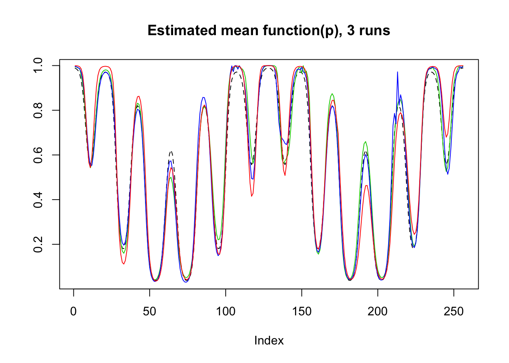
plot(mu,lty=2,type='l',ylab = '',main='Estimated mean function(logit p), 3 runs')
lines(logit(result$mu.est[2,]),col=3)
lines(logit(result$mu.est[3,]),col=4)
lines(logit(result$mu.est[1,]),col=2)plot(beta,result$beta.est[2,],col=3,pch=2,xlab = 'True beta',ylab = 'Estimated beta',ylim=c(-0.7,0.6))
lines(beta,result$beta.est[3,],col=4,pch=3,type='p')
lines(beta,result$beta.est[1,],col=2,pch=1,type='p')
abline(0,1,lty=2)
Session information
sessionInfo()R version 3.4.0 (2017-04-21)
Platform: x86_64-w64-mingw32/x64 (64-bit)
Running under: Windows 10 x64 (build 16299)
Matrix products: default
locale:
[1] LC_COLLATE=English_United States.1252
[2] LC_CTYPE=English_United States.1252
[3] LC_MONETARY=English_United States.1252
[4] LC_NUMERIC=C
[5] LC_TIME=English_United States.1252
attached base packages:
[1] stats graphics grDevices utils datasets methods base
other attached packages:
[1] smashrgen_0.1.0 wavethresh_4.6.8 MASS_7.3-47 caTools_1.17.1
[5] ashr_2.2-7 smashr_1.1-5
loaded via a namespace (and not attached):
[1] Rcpp_0.12.16 compiler_3.4.0 git2r_0.21.0
[4] workflowr_1.0.1 R.methodsS3_1.7.1 R.utils_2.6.0
[7] bitops_1.0-6 iterators_1.0.8 tools_3.4.0
[10] digest_0.6.13 evaluate_0.10 lattice_0.20-35
[13] Matrix_1.2-9 foreach_1.4.3 yaml_2.1.19
[16] parallel_3.4.0 stringr_1.3.0 knitr_1.20
[19] REBayes_1.3 rprojroot_1.3-2 grid_3.4.0
[22] data.table_1.10.4-3 rmarkdown_1.8 magrittr_1.5
[25] whisker_0.3-2 backports_1.0.5 codetools_0.2-15
[28] htmltools_0.3.5 assertthat_0.2.0 stringi_1.1.6
[31] Rmosek_8.0.69 doParallel_1.0.11 pscl_1.4.9
[34] truncnorm_1.0-7 SQUAREM_2017.10-1 R.oo_1.21.0 This reproducible R Markdown analysis was created with workflowr 1.0.1